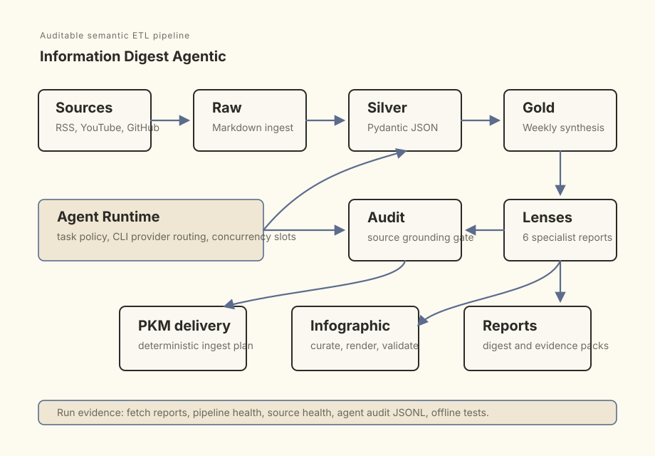

Audience
Technical builder
The system is tuned for AI and data engineering research, not general news consumption.
Information Digest Agentic is a personal research pipeline for AI and data engineering signals. It turns RSS, YouTube and GitHub inputs into typed intermediate records, a weekly synthesis, specialist lens reports and downstream delivery artifacts.

Raw source capture, typed Silver analysis, Gold synthesis, source audit, specialist lenses and downstream delivery are separated by deterministic boundaries.
The useful question is not only what changed this week. It is which sources produced the signal, which items were filtered out, which conclusions survived synthesis and what evidence can be inspected later.
The system is tuned for AI and data engineering research, not general news consumption.
A polished summary is not very useful if it cannot show which source material shaped the result.
AI work happens inside typed tasks and gates; deterministic Python owns routing, validation, delivery and health reporting.
The pipeline uses a medallion-style structure: raw Markdown source capture, Silver JSON analysis, Gold weekly synthesis and downstream delivery outputs.
The important boundary is the Silver layer. Source items become typed records before they are allowed into synthesis. That makes scoring, filtering, source references and audit behavior inspectable.
Agentic behavior is used where it adds judgment: analysis, synthesis, specialist lenses and PKM planning. Fetching, validation, routing, file movement and health reports remain deterministic code.
Fetch. RSS, YouTube and GitHub sources are captured into raw Markdown files with source-specific fetch reports.
Silver. Each raw item is analyzed into validated JSON with score, source reference and traceability fields.
Gold. High-scoring Silver records are reduced into a weekly digest and then audited against source references.
Lenses. Specialist reports inspect agent skills, evals, orchestration, portability, reference cases and portfolio ideas.
Delivery. Gold and lens outputs are copied into a PKM inbox, and the digest can be curated into an infographic artifact.
The portfolio page uses only evidence that is implemented or verified in the current local project state. External CI and full live CLI runs are not claimed here.
This is a personal research pipeline, not a packaged multi-tenant product. The current public link points to the `agentic-workflow` branch of the original Information Digest repository.
It does not claim production document intelligence: there is no OCR, layout-aware PDF parsing, hybrid retrieval, reranking or page-level citation QA in this case.
There is no hosted CI, Docker delivery or public sample dataset claimed on this page yet. Those are the right next hardening steps before treating the repository as fully showcase-ready.